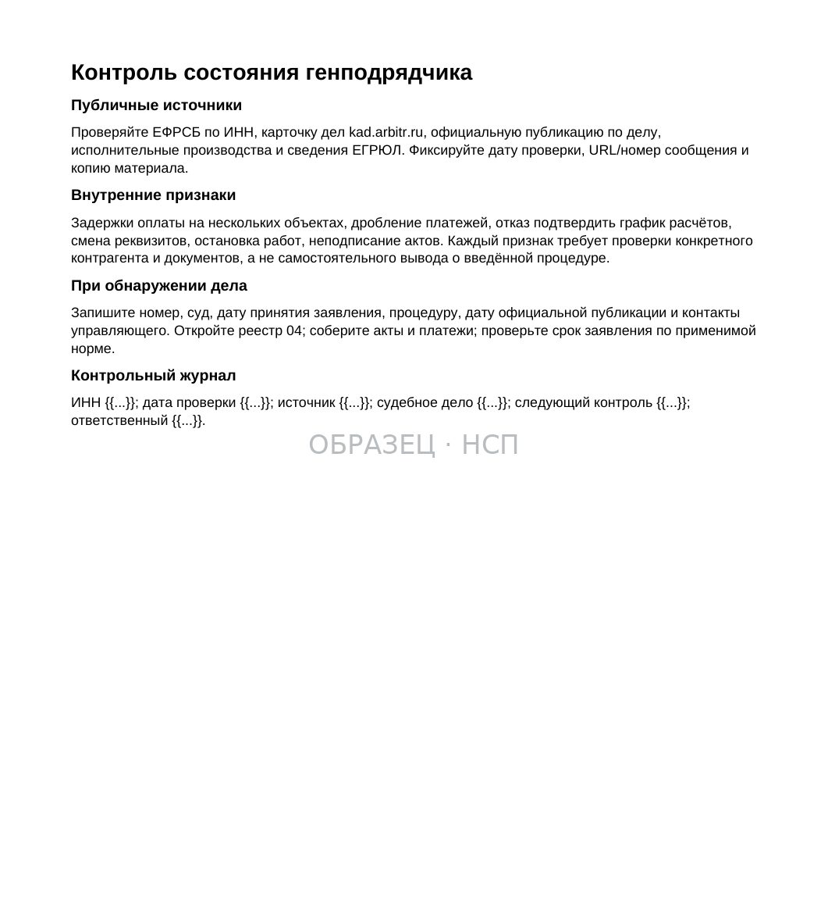
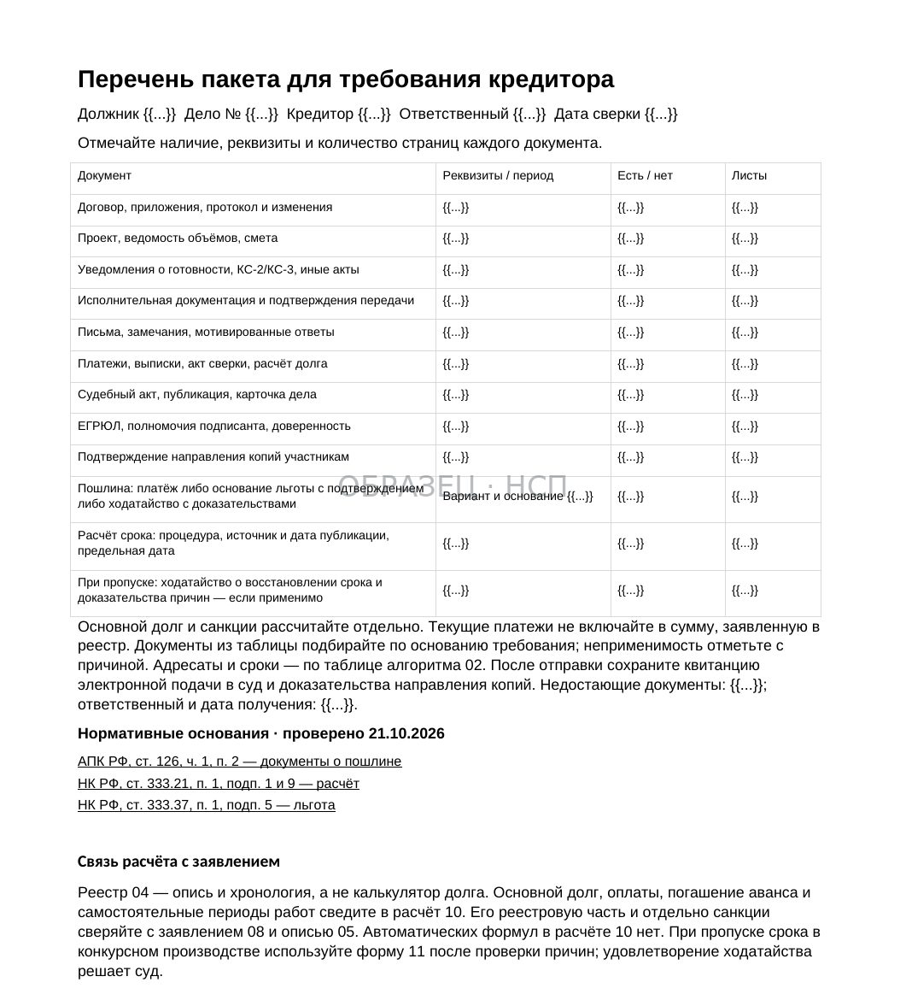
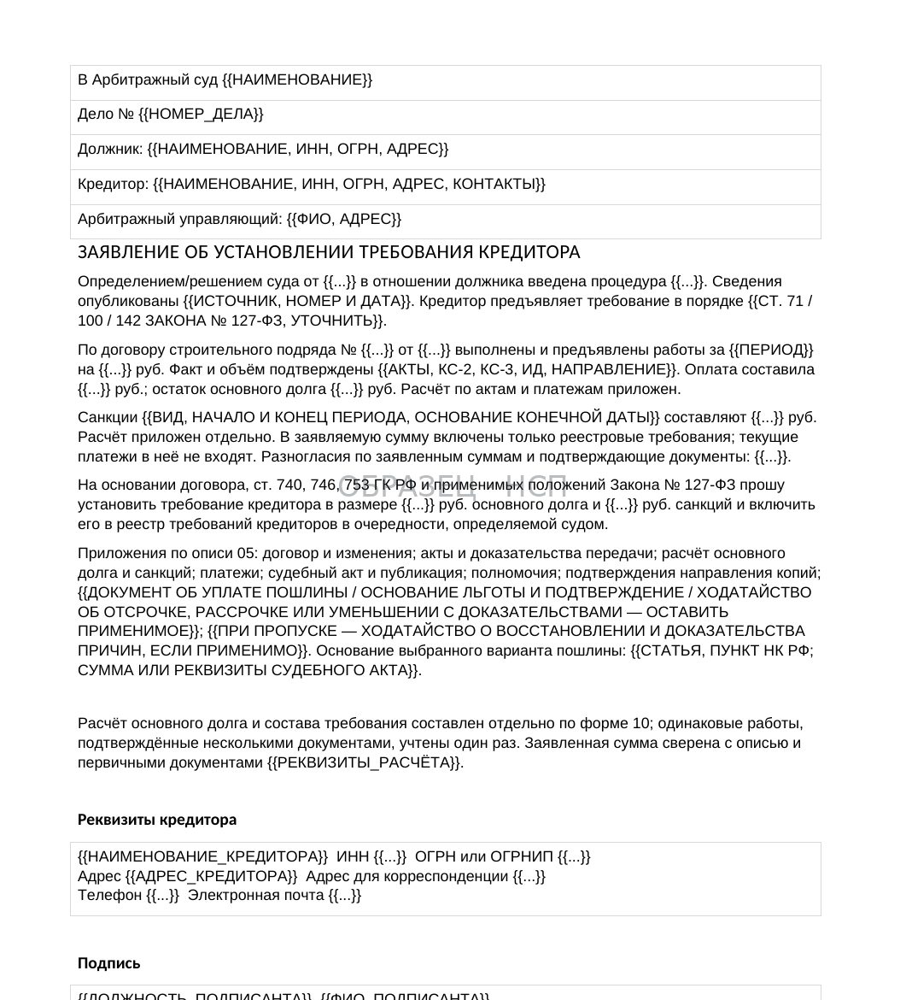
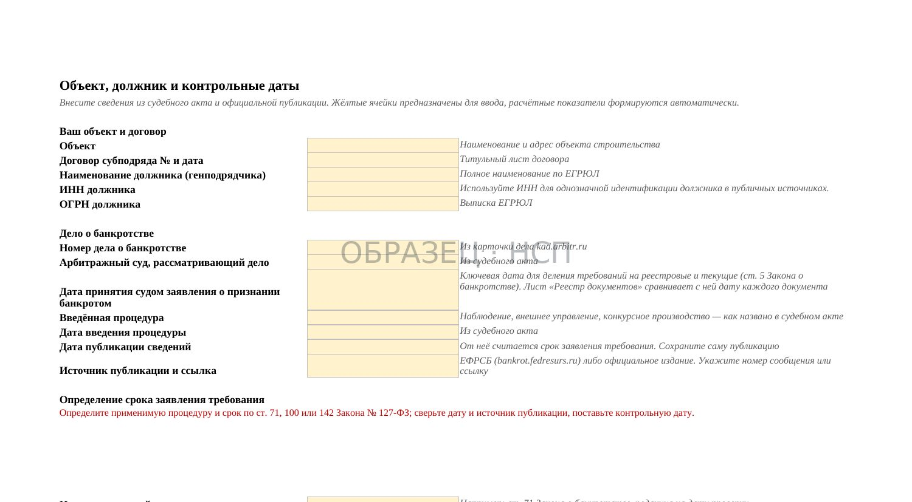

КОНТРАГЕНТ / ПРОВЕРКА ЗА 30 МИНУТ
Как проверить генподрядчика на риск банкротства: пять сигналов и порядок действий подрядчика
Обновлено 11 ноября 2026
Какие открытые источники изучить до подписания договора, как оценить платёжные риски и что делать, если в отношении генподрядчика уже началась процедура банкротства.
Подрядчик выходит на объект, закупает материалы и выполняет работы, рассчитывая на предусмотренные договором платежи. При этом финансовое положение генподрядчика может изменяться быстрее, чем проходят приёмка и расчёты.
Проверка контрагента не позволяет гарантировать его платёжеспособность. Однако она помогает обнаружить обстоятельства, из-за которых стоит пересмотреть условия финансирования, порядок сдачи этапов и объём допустимой задолженности.
Ни один из перечисленных ниже признаков сам по себе не доказывает подготовку преднамеренного банкротства, вывод активов или недобросовестность руководства. Вывод необходимо делать по совокупности проверенных сведений, с учётом деятельности и размера компании.
1. Начните с точного определения контрагента
Перед проверкой необходимо установить, какое именно юридическое лицо будет стороной договора и должником по оплате работ.
Проверьте ИНН, ОГРН, полное наименование, адрес и сведения о руководителе. Сопоставьте их с реквизитами проекта договора, счёта, доверенности подписанта и платёжных документов.
Это особенно важно на объектах, где одновременно работают застройщик, технический заказчик, генеральный подрядчик и несколько организаций со сходными названиями.
Для первичной проверки используйте официальные сервисы ФНС: «Прозрачный бизнес» и предоставление сведений ЕГРЮЛ.
Если договор подписывает одно общество, а переписка ведётся от имени другого, выясните полномочия участников и основания, по которым третья организация вправе давать указания.
Результат этапа: одна подтверждённая карточка контрагента с идентификаторами и актуальными реквизитами. Дальнейшие поиски следует проводить преимущественно по ИНН и ОГРН, а не только по наименованию.
2. Сигнал №1. Повторяющиеся споры о неоплате работ
В Картотеке арбитражных дел можно проверить судебные споры с участием генподрядчика.
Обратите внимание не только на число дел, но и на их содержание, даты, роль компании и результаты рассмотрения.
Для строительного субподрядчика особенно важны требования об оплате выполненных работ, возврате обеспечительных платежей, взыскании задолженности за материалы и услуги, а также заявления о банкротстве.
Проверяйте, завершено ли дело, вступил ли судебный акт в силу и относится ли спор к текущей хозяйственной деятельности. Само предъявление иска не означает подтверждённой задолженности: требования могут быть оспорены либо отклонены судом.
Повышенное внимание оправданно, если обнаруживается несколько независимых подтверждённых случаев продолжительной неоплаты при отсутствии понятных причин и способов урегулирования.
Не существует универсального числа судебных дел, после которого любую строительную компанию следует считать неплатёжеспособной.
3. Сигнал №2. Неисполненные денежные обязательства
Следующий источник — Банк данных исполнительных производств ФССП.
Он позволяет проверить сведения об исполнительных производствах в отношении юридического лица. При анализе важны их характер, суммы, даты возбуждения и актуальный статус.
Значительный объём длительно неисполненных денежных требований может дополнить оценку риска. Однако необходимо учитывать, что данные могут обновляться с задержкой, а наличие исполнительного производства само по себе не означает отсутствия у компании денежных средств.
Если обнаружено производство по крупному судебному взысканию, полезно сопоставить его с соответствующим арбитражным делом и выяснить, не оспаривается ли судебный акт.
Для внутренней проверки фиксируйте идентификатор производства, дату обращения к сервису и результат. При изменении обстоятельств данные следует проверять повторно.
4. Сигнал №3. Ухудшение финансовых показателей
Годовую бухгалтерскую отчётность организаций можно изучать через Государственный информационный ресурс бухгалтерской отчётности ФНС.
Сравните несколько отчётных периодов, если данные доступны. Обратите внимание на прибыль и убыток, величину обязательств, денежные средства, дебиторскую и кредиторскую задолженность, а также динамику выручки.
Для оценки важны сочетания показателей.
Например, рост обязательств одновременно с сокращением доступных денежных средств может требовать дополнительного объяснения. Снижение выручки может оказаться следствием завершения крупного проекта или сезонности, поэтому само по себе не доказывает кризис.
Не следует приравнивать бухгалтерский убыток к юридическому банкротству. Отчётность показывает состояние на отчётную дату и не раскрывает полностью текущие поступления по строительным контрактам.
Отсутствие отчётности в открытом поиске также требует проверки причин: отдельные организации могут не представлять сведения в общедоступной части ресурса по установленным основаниям.
Результат: краткое сравнение тенденций, а не оценка по одной строке баланса.
5. Сигнал №4. Изменения в структуре и управлении
С помощью выписки ЕГРЮЛ проверьте сведения о руководителе, участниках, адресе, реорганизации и наличии отметок о недостоверности сведений.
Частая смена директора, смена адреса или создание новых юридических лиц вокруг строительной группы могут быть поводом для дополнительных вопросов о договорной стороне и порядке финансирования.
Но нельзя объявлять руководителя номинальным исключительно по возрасту, месту регистрации или недавнему назначению. Также общие участники нескольких компаний не доказывают вывод активов.
Если имеются конкретные основания сомневаться в полномочиях, запросите у контрагента необходимые документы и проверьте, кто подписывает договор и акты.
При наличии судебных споров об оспаривании сделок, передаче активов или ответственности контролирующих лиц оценивайте содержание судебных актов, а не предположения участников рынка.
Для подрядчика главное — понять, какая организация несёт денежное обязательство и какое обеспечение этого обязательства реально существует.
6. Сигнал №5. Публикации и судебные акты о банкротстве
Этот признак отличается от предыдущих: официальные сообщения и судебные акты позволяют установить конкретные юридические события, а не только предполагать финансовые трудности.

Проверяйте Единый федеральный реестр сведений о банкротстве и Картотеку арбитражных дел.
Важны сообщения о намерении обратиться в суд, поступившие заявления о банкротстве, судебные определения о принятии заявления, введении наблюдения, открытии конкурсного производства и иные опубликованные сведения.
Подача заявления и признание должника банкротом — не одно и то же. Суд может отказать в удовлетворении заявления, прекратить производство или ввести определённую процедуру.
Фиксируйте номер дела, наименование суда, даты судебных актов и публикаций, ФИО арбитражного управляющего и название процедуры.
При обнаружении действующего банкротного дела дальнейшие действия подрядчика нужно строить уже по специальным правилам Федерального закона от 26 октября 2002 года № 127-ФЗ.
7. Как оценивать пять сигналов в совокупности
Результаты проверки необходимо разделить на три категории.
Подтверждённый факт. Существует судебное решение, запись ЕГРЮЛ, опубликованная отчётность, исполнительное производство или официальное сообщение о введении процедуры банкротства.
Обоснованный вывод. Несколько документов указывают на ухудшение платёжной дисциплины или рост финансовых обязательств. Такой вывод требует указания конкретных источников и даты проверки.
Предположение. Утверждение о намеренном банкротстве, фиктивном руководителе или выводе активов без соответствующих доказательств. Подобные формулировки нельзя представлять как установленный факт.
Для принятия решения полезно составить таблицу с источником, выявленным обстоятельством, датой, возможным влиянием на оплату и необходимым действием.
Например, несколько подтверждённых просрочек перед строительными субподрядчиками могут служить основанием для сокращения периода между актированием и оплатой или изменения графика мобилизации.
8. Что изменить в договоре при повышенном риске неоплаты
Результат проверки должен влиять на конкретные условия будущей работы, а не оставаться отдельным отчётом.
Прежде всего необходимо проверить порядок авансирования, объём работ до первого платежа, сроки рассмотрения КС-2 и КС-3, условия гарантийных удержаний и возможность приостановления работ при нарушении встречных обязательств.
Целесообразно определить, сколько собственных оборотных средств подрядчик готов направить на объект до получения подтверждённого платежа.
Можно согласовать этапную сдачу, более короткие расчётные периоды, заранее определённые документы для приёмки и подходящее обеспечение исполнения денежного обязательства.
Однако поручительство, гарантия или иной обеспечительный инструмент требуют проверки условий и платёжеспособности обеспечивающего лица. Само наличие слова «гарантия» в договоре не создаёт безусловной защиты.
Если существенные риски остаются и приемлемое распределение обязательств не согласовано, отказ от заключения договора может быть экономически оправданным решением.
9. Если работы уже выполняются
При появлении признаков ухудшения финансового положения заказчика важно сохранить доказательства фактически выполненного результата.
Сверьте стоимость выполненных работ, переданные акты, неподписанные документы, объёмы на объекте, дополнительные работы, исполнительную документацию, удержания и все полученные платежи.
Отдельно составьте реестр направленных заказчику документов с датами, адресатами, подтверждениями передачи и статусом рассмотрения.
Если заказчик перестал оплачивать принятые работы, проверьте срок наступления соответствующего обязательства и предусмотренный договором порядок предъявления требования.
Не следует продолжать увеличивать дебиторскую задолженность автоматически, не оценив платежи, обязательства сторон и законные основания для изменения или приостановления работ.
Практический маршрут изложен в статье «Заказчик не оплачивает выполненные работы».
10. Разделите требования по договору и требования в деле о банкротстве
Если в отношении генподрядчика уже введена процедура банкротства, обычного претензионного маршрута может быть недостаточно.

Необходимо определить дату возникновения денежного обязательства и характер требования. Для требований, возникших до и после возбуждения дела о банкротстве, могут применяться разные правила, в том числе режим реестровых требований и текущих платежей.
Затем установите действующую процедуру, номер судебного дела, опубликованные сведения и применимый срок предъявления требования.
Для доказательства задолженности потребуется согласованный расчёт с учётом стоимости принятых работ, платежей, зачёта аванса, удержаний и других подтверждённых корректировок.
Неподписанные акты не следует автоматически исключать из анализа, но их доказательственная сила определяется обстоятельствами сдачи, направления, приёмки и возражений заказчика.
Документы нужно сформировать до обращения в суд, разделив подтверждённую и спорную часть требований.
11. Если введено наблюдение
По пункту 1 статьи 71 Закона № 127-ФЗ для участия в первом собрании кредиторов предусмотрен срок 30 календарных дней с даты опубликования сообщения о введении наблюдения.

Сведения о публикации, содержание судебного акта и порядок расчёта срока необходимо проверить по конкретному делу. Для исчисления срока следует установить дату юридически значимой официальной публикации по статье 28 Закона № 127-ФЗ: дата появления записи в ЕФРСБ не всегда совпадает с датой начала течения срока.
В предусмотренном законом порядке требования направляются в арбитражный суд в электронном виде, должнику и временному управляющему, с приложением документов, подтверждающих их обоснованность.
Пропуск срока для участия в первом собрании не следует ошибочно приравнивать к автоматическому прекращению самого денежного требования: закон предусматривает особый порядок рассмотрения требований, предъявленных позднее.
Кредитору важно не просто отправить заявление, но и получить подтверждение его подачи, отслеживать судебное рассмотрение и итоговое определение.
12. Если открыто конкурсное производство
По статье 142 Закона № 127-ФЗ реестр требований кредиторов в общем случае закрывается по истечении двух месяцев с даты опубликования сведений об открытии конкурсного производства.
В действующей редакции предусмотрена возможность восстановления этого срока арбитражным судом по ходатайству кредитора при наличии уважительных причин. Восстановление не происходит автоматически.
Если срок пропущен, требуется отдельно проверить обстоятельства, доказательства уважительности причин, процессуальную возможность восстановления и последствия отказа.
Нельзя утверждать, что любой пропущенный срок безусловно не восстанавливается. Равным образом нельзя обещать, что суд удовлетворит соответствующее ходатайство.
Учитывайте, что специальные категории должников и требований могут регулироваться особыми нормами.
13. Подготовьте комплект доказательств и контроль дат
Для требований строительного подрядчика обычно существенны договор с приложениями, дополнительные соглашения, акты сдачи и приёмки, КС-2 и КС-3, переписка, исполнительная документация, платёжные документы и расчёт остатка.

Проверяйте, что каждая сумма включена в расчёт один раз, частичные платежи учтены, а документы позволяют соотнести выполненные работы с соответствующим обязательством.
Полезно вести отдельный реестр с номером дела о банкротстве, видом процедуры, датой судебного акта, источником и датой публикации, сроком подачи документов, ответственным и доказательством направления.
Реестр помогает контролировать факты и сроки, но не подменяет юридическое определение начального и последнего дня срока. При необходимости используйте правовую проверку материалов до отправки заявления.
Сохраняйте копии исходных файлов и квитанции электронного направления. После подачи контролируйте карточку дела и принятые судом определения.
14. Комплект документов при банкротстве генподрядчика
В продуктовой линейке «На стороне подрядчика» представлен «Взыскание задолженности при банкротстве генподрядчика».
В действующей поставке 12 файлов: 10 Word, 1 Excel и 1 PDF. В состав входят алгоритм действий, материалы по проверке рисков до банкротства, реестр документов и контроль дат, перечень доказательств, формы запросов и уведомлений управляющему, заготовка заявления в реестр, ручной расчёт задолженности и документы для ситуации с пропущенным сроком.
Стоимость — 24 900 ₽.
Документы предназначены для подготовки позиции кредитора и требуют заполнения по материалам конкретного договора и судебного дела. Excel используется для учёта документов и дат; юридические сроки необходимо определять по действующему закону и официальным публикациям.
Комплект не гарантирует включение требования в реестр или фактическое получение денежных средств. При существенной сумме долга, спорной приёмке и сложной процессуальной ситуации целесообразна индивидуальная юридическая проверка.
Главный вывод
Проверка генподрядчика перед подписанием договора должна опираться на официальные сведения и документы, а не на предположения о намерениях его руководства.
Судебные споры, исполнительные производства, финансовая отчётность, корпоративные изменения и банкротные публикации позволяют установить факты для оценки договорного риска.
Если процедура банкротства уже началась, приоритет меняется: необходимо определить применимые сроки, собрать доказательства задолженности и надлежащим образом предъявить требование. Здесь своевременность действий и качество документов влияют на возможность защиты интересов подрядчика.
КОМПЛЕКТ P9 / 12 ФАЙЛОВ
Взыскание задолженности при банкротстве генподрядчика
Алгоритм действий, маркеры риска, реестр документов и дат, перечень доказательств, заготовка заявления в реестр, уведомления и запросы управляющему. 10 Word, 1 Excel и 1 PDF.
24 900 ₽
Посмотреть состав комплекта P9БЕСПЛАТНО, ЗА EMAIL
Банкротство заказчика: проверка контрагента до подписи
Маркеры видны и до процедуры, если знать, где смотреть, и вести наблюдение с начала работ. Здесь перечень источников проверки, реестр признаков по объекту и порядок первых действий.
- Проверка контрагента до подписи
- Реестр признаков по объекту
- Что делать при первых признаках
- Запрос о состоянии расчётов
- Что делать дальше
Читайте также
- Реестр требований кредиторов: что это для субподрядчика с подписанными актами
- Включение в реестр: письмо управляющему требованием не является
- Срок включения в реестр: от чего он считается
- Заявление о включении в реестр: почему образец не спасает
- Запрос арбитражному управляющему: что он даёт и чего не даёт
- Генподрядчик зарабатывает на вас больше, чем на стройке
- Подписанная КС-2 не значит, что вам заплатят
- Скидка 15% на тендере — это не конкуренция